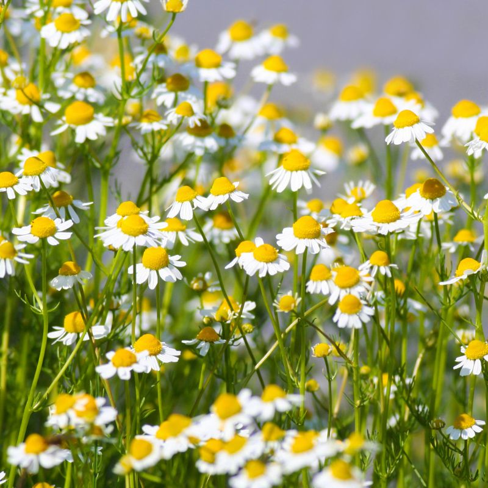

Chamomile (Matricaria chamomilla L.)
How to recognize Chamomile
Chamomile is a delightful herb with distinct features that make it easy to recognize. Here's how you can identify:
-
Appearance
- Chamomile is a herbaceous plant that typically grows up to 30 cm tall.
- Its most recognizable feature is its daisy-like flowers. These flowers have a yellow center that's slightly raised, surrounded by white petals with rounded tips. They measure around 2.5 cm in diameter.
- The leaves of chamomile are feathery and fern-like, with a bright emerald-green color. They are divided into thin, delicate segments, each about 1-2 cm long.
-
Scent and Taste
- Chamomile has a sweet, floral scent reminiscent of apples or hay.
- When brewed into tea, chamomile offers a mild, slightly sweet taste that's soothing and comforting.
-
Habitat and Growing Season
- Chamomile is native to Europe and western Asia, but it has been introduced to other parts of the world.
- You'll find it growing abundantly in temperate climates, often in fields, meadows, and along roadsides.
- Chamomile typically blooms from early May to late September.
Medicinal properties
- Nature's Soothing Ally: Chamomile, a gentle herb, offers a natural approach to healing. Its calming effects make it a cherished remedy for various health concerns.
- Relaxation and Anxiety Relief: When life feels overwhelming, chamomile steps in. Sipping chamomile tea before bedtime can ease anxiety, promote relaxation, and encourage restful sleep.
- Menstrual Comfort: For those navigating the monthly rollercoaster of PMS symptoms, chamomile provides relief. Its anti-inflammatory properties soothe cramps and discomfort.
- Balancing Blood Sugar: Chamomile tea isn't just a cozy beverage; it may help regulate blood sugar levels. While it's not a substitute for diabetes management, it complements existing treatments.
- Bone Health Support: Chamomile's flavonoids act as guardians against osteoporosis. By reducing oxidative stress, they contribute to stronger bones.
- Inflammation Tamer: Chronic inflammation is a silent troublemaker. Chamomile steps in with its anti-inflammatory prowess, potentially safeguarding against health issues.
- A Whiff of Anticancer Potential: In the lab, chamomile shows promise in inhibiting cancer cell growth. While more research is needed, this delicate herb hints at powerful possibilities.
- Skin's Best Friend: Chamomile soothes irritated skin, accelerates wound healing, and provides relief from minor burns. It's like a gentle hug for your skin.
- Gut Harmony: Chamomile's gentle touch extends to the digestive system. It eases tummy troubles, making it a go-to for upset stomachs.
- Cultural Connection: Beyond its healing properties, chamomile connects us to ancient wisdom. Across cultures, it has been cherished for generations.
Remedy preparation
- Harvesting Chamomile Flowers
- Timing: Harvest chamomile flowers when they are fully open, usually in the morning after the dew has dried.
- Method: Gently pluck the flower heads from the plant. You can use fresh or dried flowers.
- Drying the Flowers
- Air-Drying: Spread the harvested flowers in a single layer on a clean, dry surface. Allow them to air-dry completely. This process usually takes a few days.
- Avoid Direct Sunlight: Keep the flowers away from direct sunlight to preserve their beneficial compounds.
- Making Chamomile Tea
- Ingredients.
- Dried chamomile flowers (about 1-2 teaspoons per cup of water)
- Boiling water
- Steps:
- Place the dried chamomile flowers in a teapot or cup.
- Pour boiling water over the flowers.
- Cover and steep for about 5-10 minutes.
- Strain the tea to remove the flowers.
- Enjoy your soothing chamomile tea!
- Chamomile Infused Oil
- Ingredients.
- Dried chamomile flowers
- Carrier oil (such as olive oil or coconut oil)
- Steps:
- Fill a glass jar with dried chamomile flowers.
- Pour the carrier oil over the flowers, covering them completely.
- Seal the jar and place it in a sunny spot for 2-4 weeks.
- Strain the oil to remove the flowers.
- Use the chamomile-infused oil for massage or skin care.
- Chamomile Salve
- Ingredients.
- Chamomile-infused oil (prepared as mentioned above)
- Beeswax (for consistency)
- Steps:
- Melt beeswax in a double boiler.
- Add the chamomile-infused oil and mix well.
- Pour the mixture into small containers.
- Let it cool and solidify.
- Apply the chamomile salve to minor cuts, burns, or skin irritations.
- Chamomile Steam Inhalation
- Ingredients.
- Dried chamomile flowers
- Boiling water
- Steps:
- Place chamomile flowers in a bowl.
- Pour boiling water over the flowers.
- Lean over the bowl, cover your head with a towel, and inhale the steam.
- This can help relieve congestion and soothe respiratory discomfort.